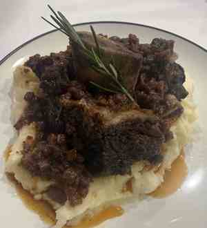

Tender beef, a glossy red wine sauce, and buttery potatoes. Use pre-chopped vegetables and refrigerated mashed potatoes to keep prep short while the Dutch oven does the heavy lifting.
Shopping list
Tap each item as you shop or prep.
Short ribs
Garlic-Parmesan mashed potatoes
Step-by-step
- Preheat and season
Preheat oven to 300°F. Pat ribs very dry, then season generously with salt and pepper.
- Sear the beef
Heat 2 tbsp olive oil in a Dutch oven over medium-high. Brown ribs for 2–4 minutes per meaty side. Transfer to a plate.
- Build the flavor
Reduce heat to medium. Add 2 cups pre-chopped mirepoix and sauté 5–7 minutes. Stir in 1 tbsp minced garlic and 2 tbsp tomato paste for 1 minute.
- Reduce the wine
Pour in 2 cups red wine, scraping up browned bits. Simmer 8–10 minutes until reduced by roughly half.
- Add broth and herbs
Return ribs and juices to the pot. Add about 1–2 cups broth, enough to reach halfway to two-thirds up the meat, plus thyme and rosemary. Bring to a gentle simmer.
- Braise until tender
Cover and bake at 300°F for 2½–3½ hours. Check at 2½ hours. If the beef still resists a fork, continue in 20-minute increments.
- Finish the sauce
Remove ribs and cover loosely with foil. Skim fat; optionally strain liquid into a saucepan. Simmer uncovered 10–15 minutes until glossy. Turn off heat and stir in 1 tbsp cold butter. Taste before salting.
- Upgrade the mashed potatoes
Heat prepared potatoes as directed. Melt 1 tbsp butter over medium-low, stir in 1 tsp minced garlic for 60–90 seconds, then mix this garlic butter and 2 tbsp Parmesan into the potatoes.
- Plate
Make a bed of mashed potatoes, add the tender ribs, and generously spoon the red wine sauce over everything.
Simple cooking timeline
Relative to your desired dinner time. Start about 4 hours early so there is room for a slower braise.
Wine & chef's notes
Pair with a Saint-Julien Bordeaux or a balanced Napa Cabernet Sauvignon. Save the special bottle for drinking; an inexpensive, drinkable dry red works for cooking.